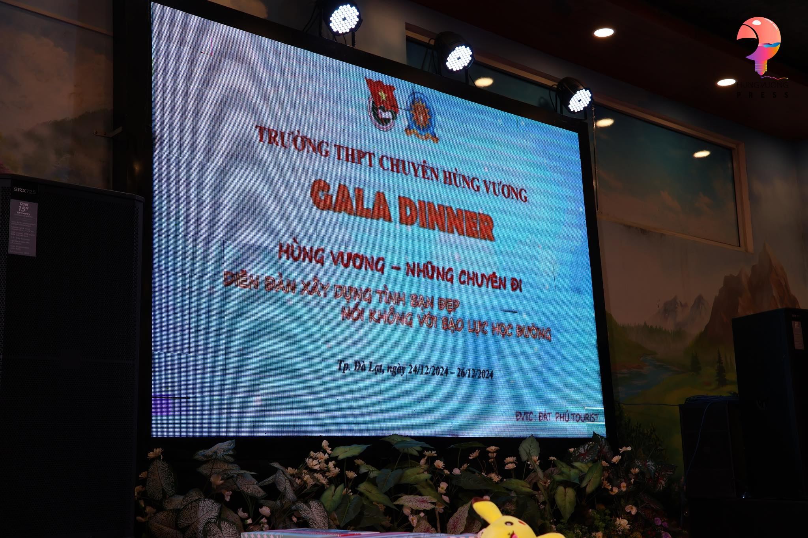
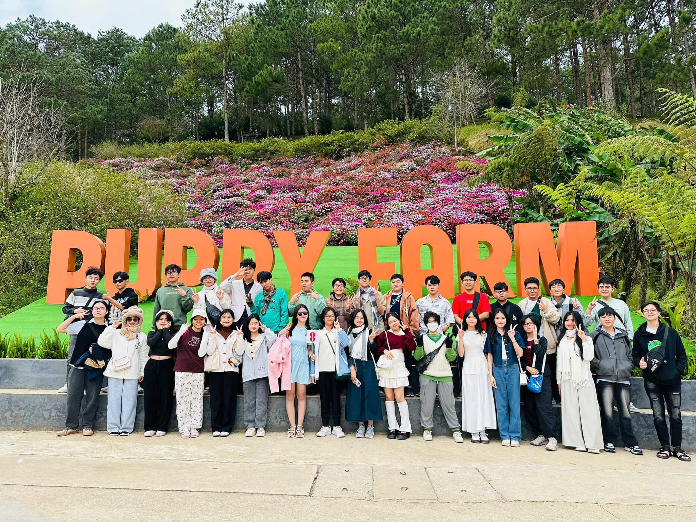
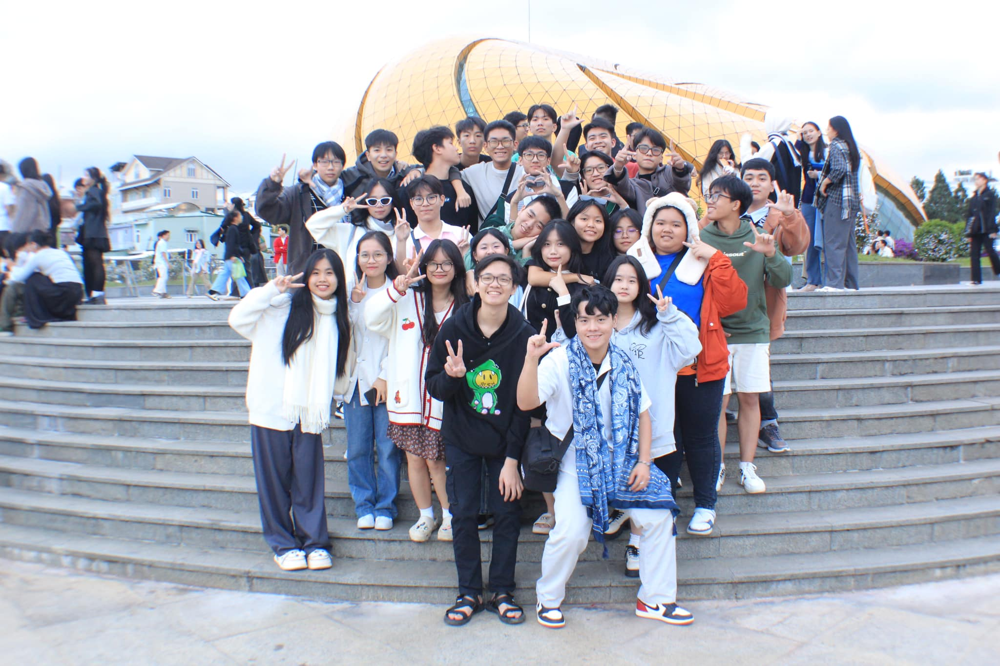
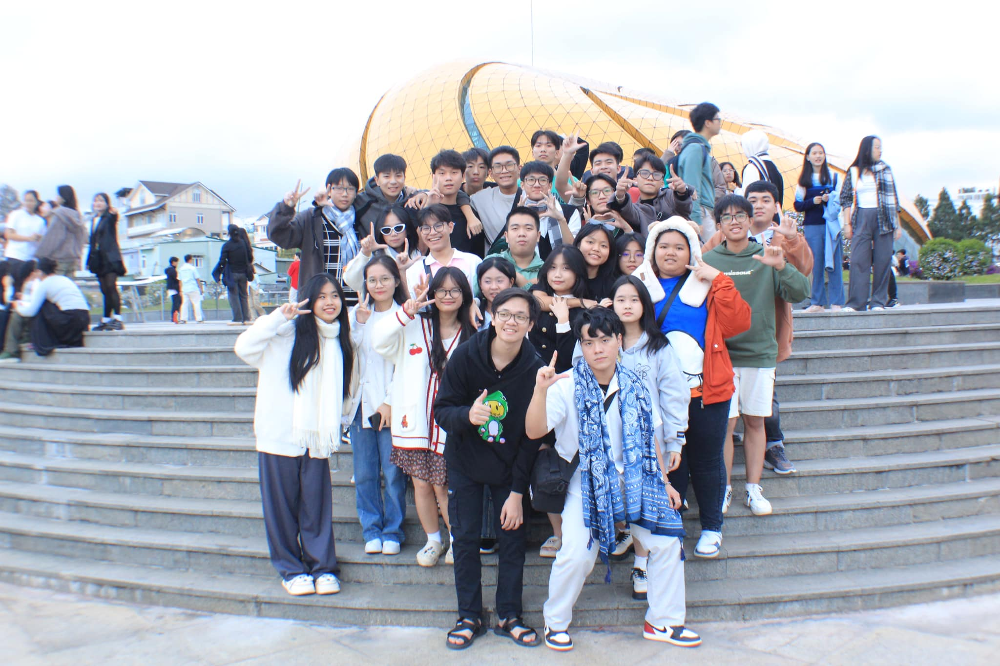
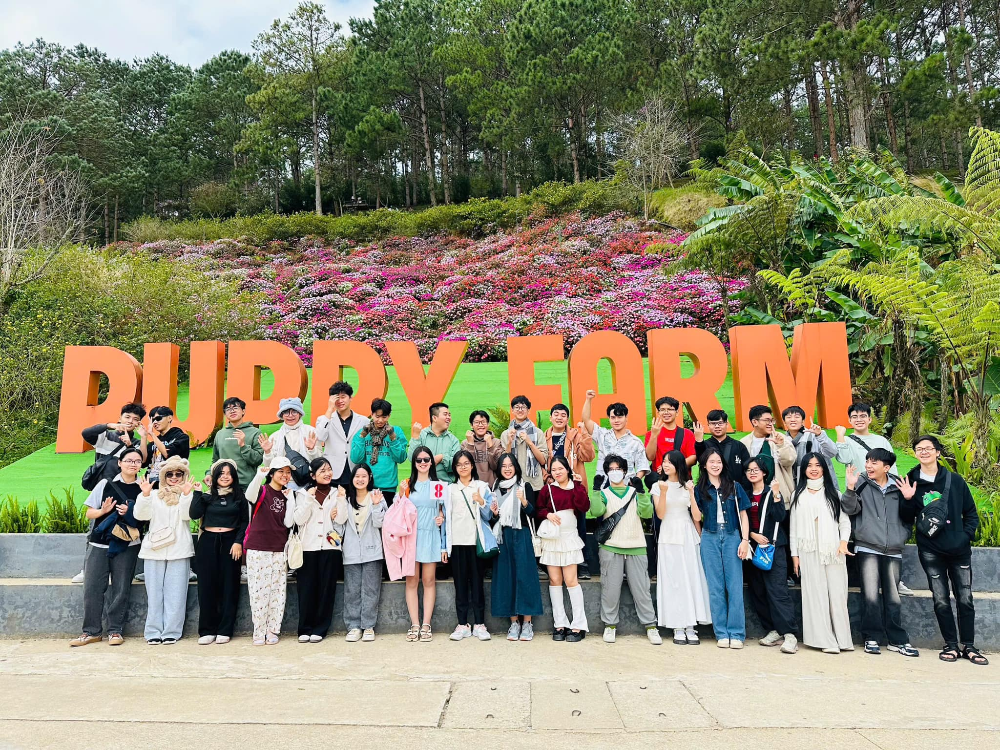

Thành Phố Ngàn Hoa & Những Kỷ Niệm
Kì thi học kỳ I năm học 2024-2025 vừa kết thúc cũng là lúc cái lạnh của những ngày cuối năm ùa về, tiếng chuông nhà thờ vang lên báo hiệu một mùa Noel mới.
Hòa chung không khí đó, trường THPT Chuyên Hùng Vương đã tổ chức cho các bạn học sinh một chuyến đi 3 ngày 2 đêm trải nghiệm ngoại khóa tại xứ sở ngàn hoa. Tại đây, chúng mình đã ghé thăm Đại học Đà Lạt, Puppy Farm, Bảo tàng nhà lao thiếu nhi, Quảng trường Lâm Viên... và tận hưởng cái lạnh về đêm tại chợ Đà Lạt.
Tổng kết lại chuyến đi 3 ngày 2 đêm đó, chúng mình đã có thêm rất nhiều kỉ niệm đẹp với nhau, dẫu có lúc mệt mỏi nhưng chúng mình tin rằng: chuyến đi này đã là khoảng thời gian tuyệt vời để nghỉ ngơi sau một kì học vất vả cũng như là một sợi dây để gắn kết tình bạn của chúng mình.

Check-in Quảng trường Lâm Viên

Tiệc Gala tổng kết chuyến đi

Kỷ niệm Đà Lạt

Kỷ niệm Đà Lạt

Tham quan Bảo tàng Nhà lao thiếu nhi

Tham quan Dinh Ba Bảo Đại - địa điểm cuối cùng của hành trình

Kỷ niệm Đà Lạt

Kỷ niệm Đà Lạt